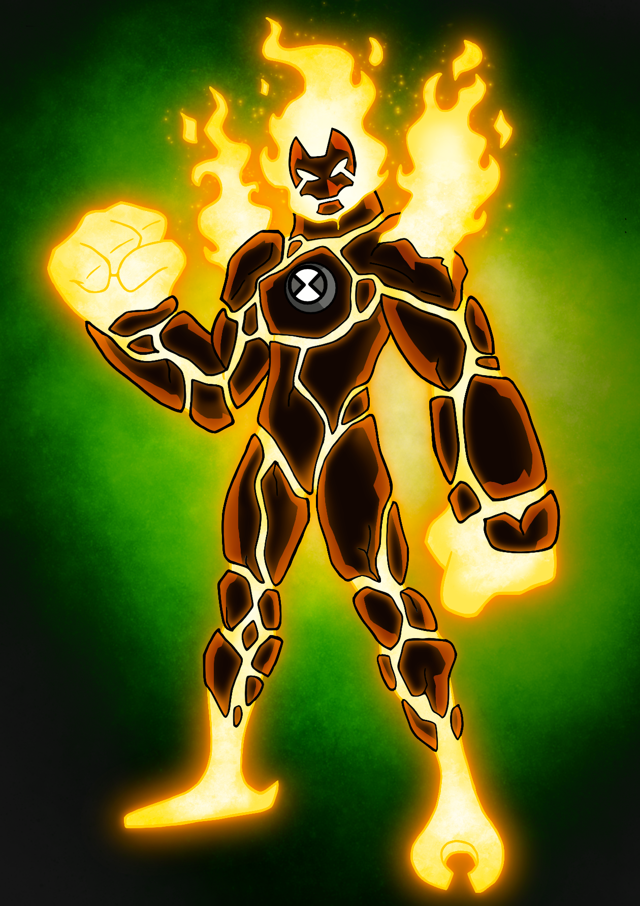
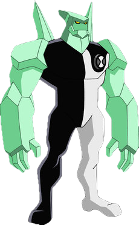

Heatblast is a plasma-based life-form whose body is composed of a super hot inner plasma body covered by a dark red or brown rocks.[pop-up 1][2] As a fire-based entity, his body radiates high amounts of heat. His feet have a slight oval-like design with only two toes and one back toe. His tongue is also made of fire.
Heatblast
Description of Heatblast
Heatblast
Wildmutt
Description of Wildmutt
Wildmutt appears to be a large orange dog-like creature with no eyes, ears, nose, or tail. He stands on all fours and his movements are somewhat apelike. His teeth are very defined and his bottom jaw sticks out of his mouth. The various spines found all across his body function similarly to whiskers with tactile sensing, and are not fur.[DJ 1] Since Wildmutt has no eyes, he uses his sense of smell and hearing to navigate, which are aided by three gill-like nostrils located on each side of his neck.
Wildmutt

Diamondhead
Description of Diamondhead
Being a silicon-based life form,[2][3] Diamondhead's body is composed of durable pale green crystals. He sports four crystal shards on his back and has a sharp head.
Diamondhead
Grey Matter
Description of Grey Matter
Grey Matter is a grey-skinned, frog-like, bipedal alien that is only four inches tall with large green eyes, which have rectangular pupils and horizontal eyelids.